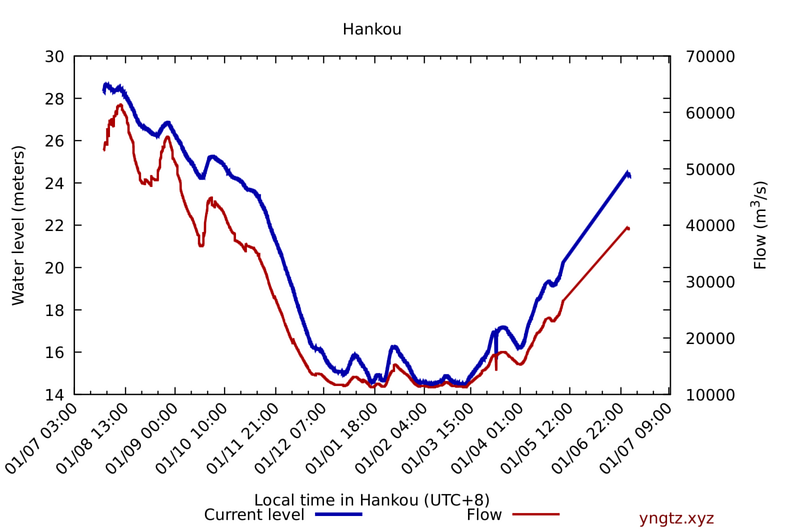
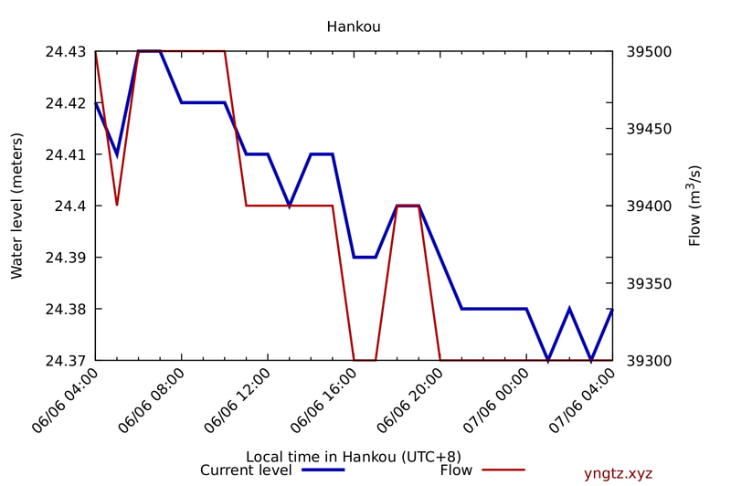

{kind=link}
{kind=link}



Also available: raw water monitoring data. You can also download it as a single tar.xz archive.
Water monitoring stations map (source; original size)
Weather report: Ventusky, Windy.
The normal water level of the reservoir is 175m with a corresponding storage of 3.93 × 1010 m3. The limiting level during flood season is 145m, with a flood control storage of 2.215 × 1010 m3.
We are also plotting Wulong River tributary. It is downstream from Cuntan but might contribute an additional amount of during storms.
This graph should represent what will eventually hit Hankou/Wuhan further downstream (if the numbers were real). Chenglingji should be what Dongting Lake system is dumping back into the Yangtze.
Q: This isn't the original...what happened?
A: The OG has been taken down, but has published code. See the final snapshot on archive.org
Q: How did you generate the graphs?
A: We started monitoring Yangtze River Water Resources Commission's website on Sunday, July 19. Our scripts fetch the real-time water level monitoring page every 5 minutes, and update the above graphs.
Q: Why is inflow shown as separate points? The water level and outflow are shown as continuous lines.
A: This is a problem with the underlying data source: on most captures "入" (inflow) is reported as "-". We assume that estimating and updating inflow requires manual steps, hence the irregular updates. Previously inflow was reported once every 6 hours but since July 26 it has been reported once every 2 hours (outflow and water level updates are once an hour).
The inflow curve appears to be basically the measurement at Cuntan, due to the length of the reservoir, minus runoff and tributaries downriver.
Q: The numbers look suspect!
A: We agree. On multiple occasions inflow < outflow yet the water level is going up. As one anon said, "CCP might just have the real data, and then decide by committee what levels they want to share, and then get the water system operator to tell them how far is too far." We can't argue with that. But the trend lines are potentially indicative and it is important to archive the official data for posterity.
Q: Can you add data for beginning of July?
A: Unfortunately, no as we don't have data for before July 19. (It is our plan to import the data from Three Gorges Reservoir Watch eventually. We have not gotten around to it yet. Their data points have different -- once daily -- granularity, though.)
Q: Is your data set/plotting scripts public? Can I re-post your graphs?
A: Absolutely, and please do! You can download the web page captures and our gnuplot workflow here. You can download this website's current source code at github. Some anons used the data set to plot predictions in this Google Sheet -- thank you!
Q: Why is this important? Where can I find out more?
A: Start with this Twitter thread. @public_juan's and @PavewayIV's Twitter accounts have excellent reporting. /tgdg/ threads on 4chan's /pol/ are not for the faint of heart but harness the power of many anons (catalog link and /tgdg/ bookmarklet.) There are also threads on KiwiFarms, TB2K, Free Republic, and even GLP.
You should also check out this short (~4.5 min) video on Cavitation & the Glen Canyon Dam, and Association of State Dam Safety Officials page on dam failures
There is also an open-access technical paper detailing the construction of the dam: Key Technologies of the Hydraulic Structures of the Three Gorges Project.
Q: Are there live streams?
A: Yes. YouTube: here. HLS streams: here and here (mirrors this). Twitch: here. There is also a multi-stream.
Q: Are there data streams from Hankou/Wuhan, which is downstream of the dam?
A: TomTom publishes live traffic report from Wuhan.
Q: Why did the Wuhan/Hankou graph change? It previously looked like this.
A: We believe that July 19 08:00 (GMT+8) data point was in error (42.57m water level; all other data points for the week are ~28m) so have removed it. It was probably a manual data entry error.
And remember, friends, >>177777777, >>269999999, >>277777777.
{kind=link}
{kind=link}
{kind=link}
{kind=link}